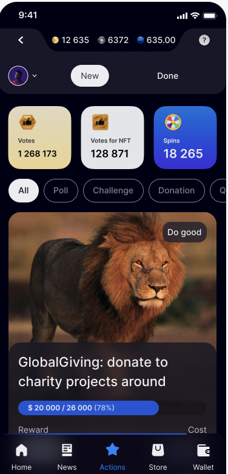
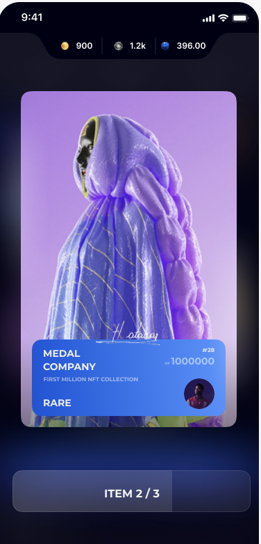
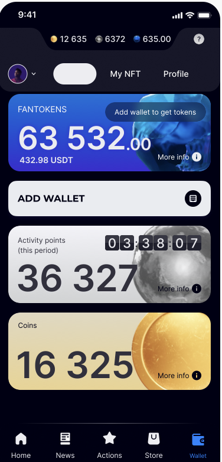

ЗАГОЛОВОК
Описание кейса - контекс максимум в 3 строки ание кейса - контекс максимум в 3 строки Описание кейса - контекс максимум в 3 строки
Текст кнопки подробнее ›


Product designer
I create websites with a focus on logic, structure, and user experience
— so they are useful, intuitive, and actually work for you.
Описание кейса - контекс максимум в 3 строки ание кейса - контекс максимум в 3 строки Описание кейса - контекс максимум в 3 строки
Текст кнопки подробнее ›


Описание кейса - контекс максимум в 3 строки ание кейса - контекс максимум в 3 строки Описание кейса - контекс максимум в 3 строки
Текст кнопки подробнее ›
Art school led me  into graphic design, and graphic design led me into web.
into graphic design, and graphic design led me into web.
I was born and raised on Sakhalin  an island in the Russian Far East. It shaped my visual thinking,
an island in the Russian Far East. It shaped my visual thinking,
 my interest in
Asian culture, and a more structured and observant approach to visuals.
my interest in
Asian culture, and a more structured and observant approach to visuals.
For me, a website is not “just something beautiful on the internet”,
 but a functional
tool that should be logical, easy to use, and clear for people
but a functional
tool that should be logical, easy to use, and clear for people